Fonti «odontoiatriche» tempo addietro mi suggerirono questa entusiasmante traversata, che credo costituisca il collegamento diretto fra il paesino di Stavoli e gli stavoli Simon in val Nuviernulis. Altrimenti tocca appena scendere e risalire a Moggessa facendo tutto il giro.
Mi si può obiettare che il Cuel de la Ruvîs è un ignobile cimotto boscoso, e ciò sarebbe anche vero, però: c’è lo stavolo Pustot, c’è il bel viaz da Fedeveiz per il Clap des Pioris, c’è il sentiero basso di cengia per Fedeveiz, c’è questa traversata che ora descrivo, c’è il costone bruciato che sale direttamente da Stavoli, e chissà cosa altro ancora vi si trova. E questo solo sul versante sud!
Quindi no caro: il Cuel da la Ruvîs me lo tengo stretto. Ciò che conta non è il monte in sé ma ciò che ci permette di provare.
Questa volta per arrivare a Stavoli decidiamo, avendola rimandata un sacco di volte, di percorrere il «sentiero nero» in dx orografica del rio Variola passando per le casera Forcjute e Frattina.
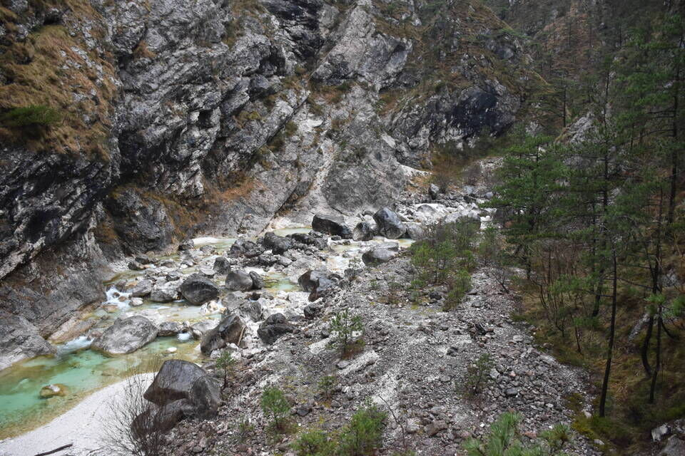I massi che abbiamo usato per il primo guado del Variola. Mai visto tagli né ometti durante la percorrenza di tutto il sentiero: intristisce vedere come nessuno pulisca le tracce. Infatti dopo il guado non è ovvio dove andare: bisogna salire per poco il rio Ruvisàn (grande rio a sx) e poi prendere il primo rio secondario che si apre a dx, dove qualche decina di metri più in alto si ritrova il sentiero.
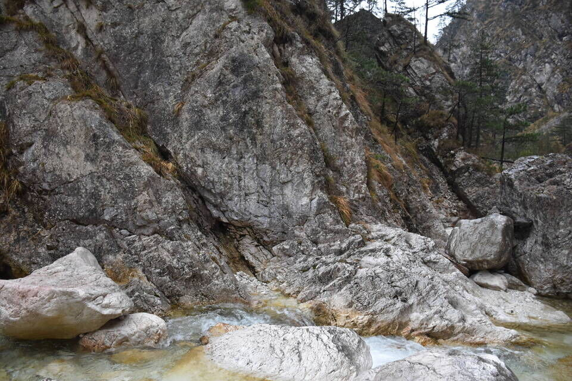Casera Forcjute, nome quanto mai opportuno.
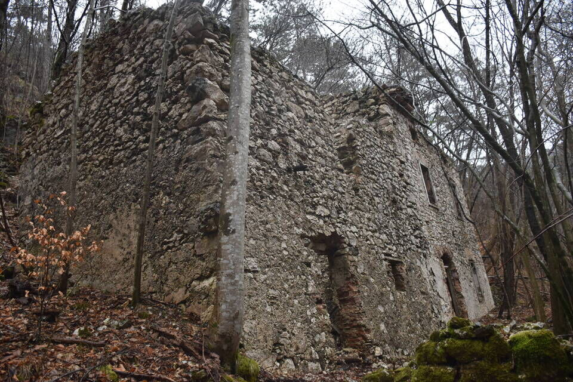Dai presso di casera Frattina vediamo davanti a noi Stavoli con imbiancato il Cuel dal Lacéit, poi il Cuel da la Ruvîs e infine la spalla sud-est di quest'ultimo. Da notare che il versante meridionale del Cuel da la Ruvîs è suddivisibile in tre settori: quello occidentale (Pustot) afferente alla cima principale, mentre fanno capo alla spalla il costone orientale (Gjalinârs), disastrato dall'incendio, e quello centrale che noi abbiamo risalito.
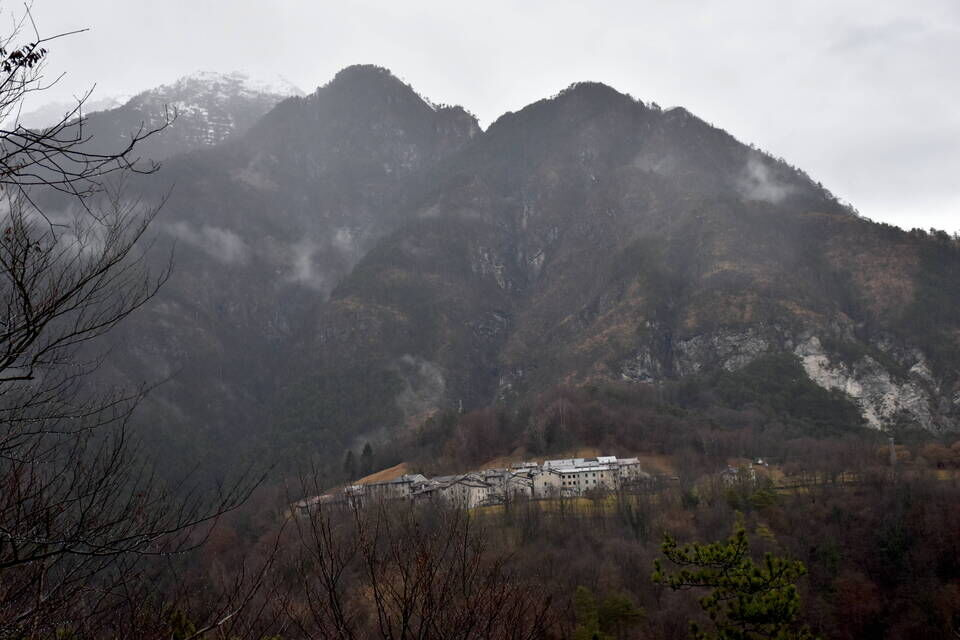Devo dire di aver sottovalutato questo sentiero: in alcuni punti bisogna essere in grado di ritrovare la traccia perduta; in altri c'è da stare bene all'occhio per via della marcata esposizione. Sotto di noi il punto da raggiungere, dove il rio del Mulino confluisce nel Variola. Questo tratto di sentiero, cioè da casera Frattina fino al rio, benché ottimamente marcato, è impressionante: una fitta serie di tornantini permette di scendere lungo un versante davvero ripidissimo.
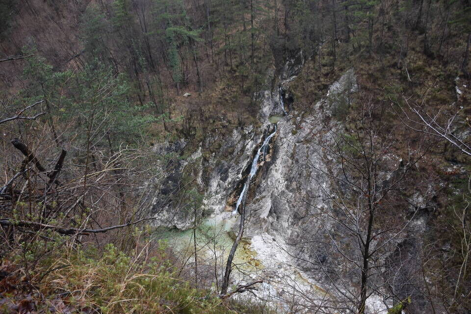La cengia da cui siamo arrivati. Occhio che il guado non è scontato, noi siamo passati con l'acqua sopra il ginocchio, con tanta acqua non si passa.
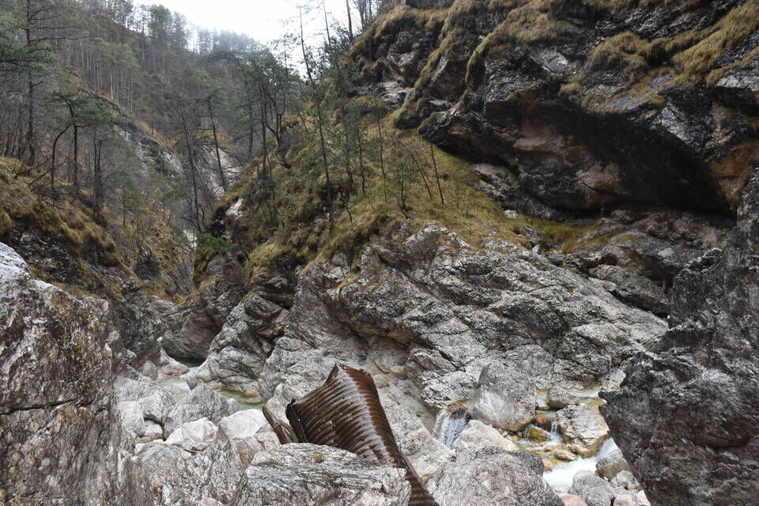Il mulino di Stavoli, che dà il nome al rio.
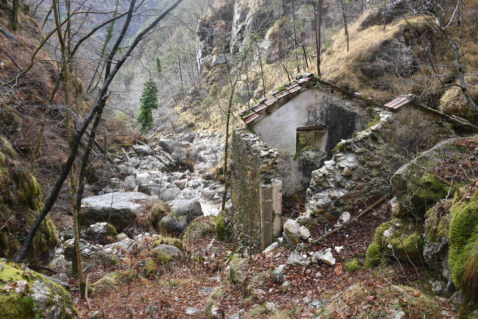Tornati alla civiltà prendiamo l'ormai usuale sentiero di Pustot cercando di capire quando abbandonarlo per risalire il costone che ci siamo prefissati.
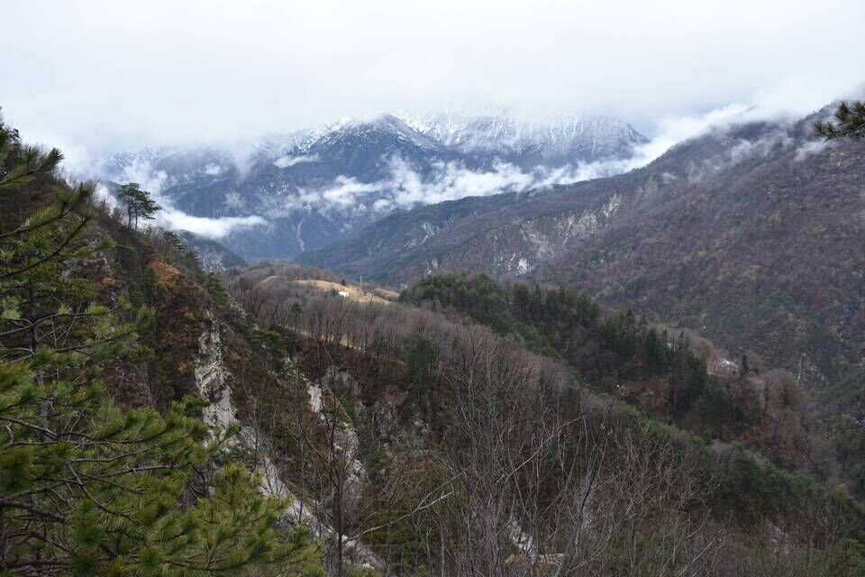Sono affascinanti i «sentieri neri», ma vogliamo parlare dei sentieri non segnati su alcuna mappa? Non ci si dorme la notte per la curiosità di andare a vedere cosa c'è! L'a posteriori rovina tutto: cosa sarà mai un sentierino nel bosco? Eppure, mi sorprendo sempre di quanto forte sia il desiderio di scoperta che precede la conoscenza.
Nota bene che la componente «umana» è imprescindibile: salire un costone senza traccia non mi dice nulla. Per questo motivo storco sempre un po' il naso quando qualcuno mi dice che sono un «appassionato di fuori traccia». Siamo esseri complicati.
Non scrivo dove inizia il troi, perché per prima cosa è roba di cacciatori e quindi è meglio tacere; seconda cosa, francamente non so dove parta, dato che non abbiamo trovato bivi e che abbiamo reperito il sentiero solo dopo un po' di ricerca seguendo il nostro istinto.
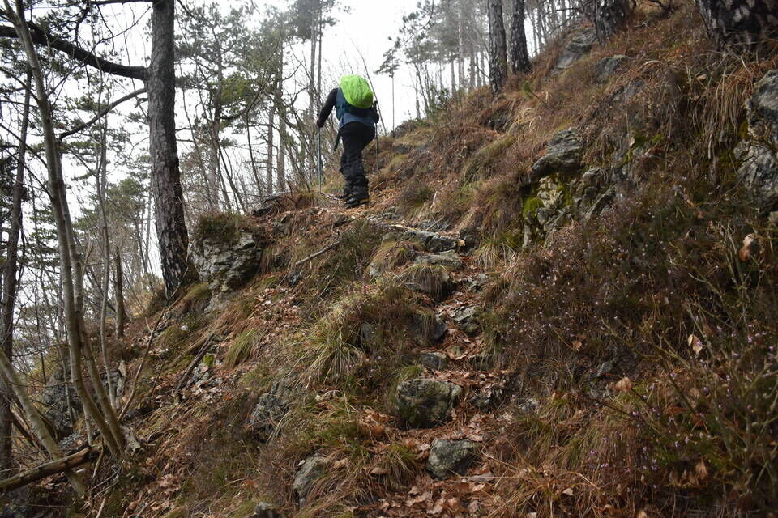Lassù la spalla che a breve raggiungeremo.
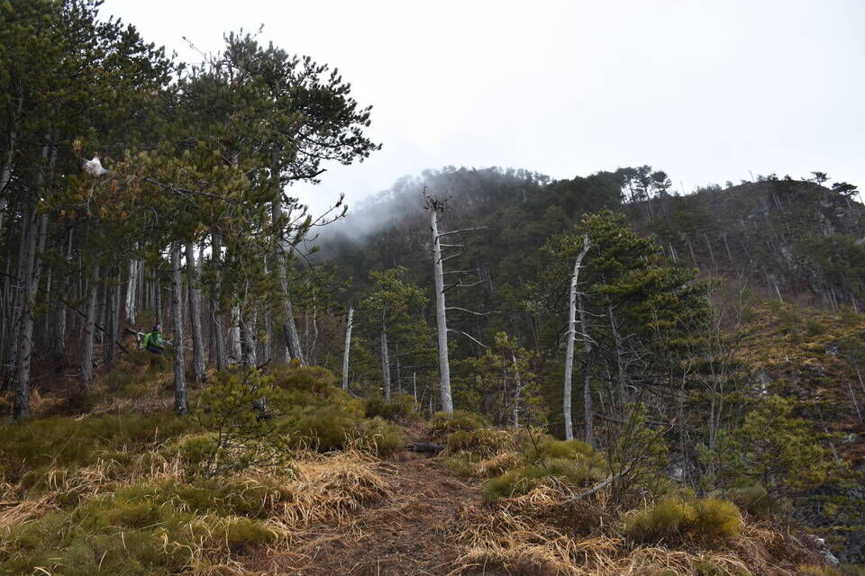Domanda: dalla forcelletta fra la spalla e il corpo principale del Cuel de la Ruvîs, si può salire per cresta su quest'ultimo? (cfr it. 1782 Gaberscik 2021) La chiave penso sia questa cengia, che ho indicata con una freccia; non è chiaro se essa sia percorribile oppure no, l'unico modo è andare a vedere. Certo che da questa foto propenderei per il no, per lo meno riguardo all'inizio.
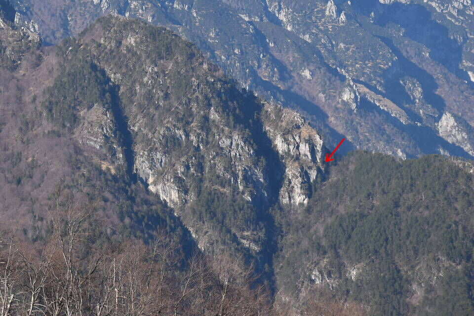E invece dalla forcelletta c'è una bella traccia di camosci che la percorre! Percorro solo qualche metro, vedo un passaggio infido ed esposto, non mi va di oltrepassarlo per poi ritornare indietro.
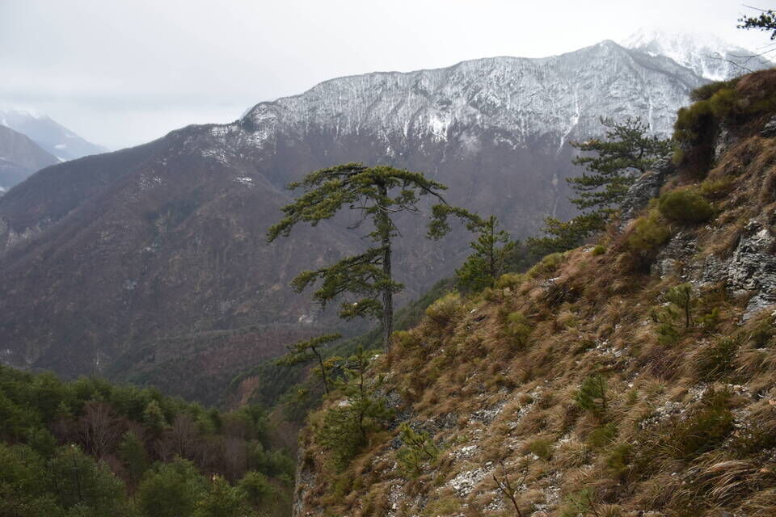Non posso non fantasticare sulle misteriose cenge ovest del Cimadôrs: ne so qualcosa, ma di certo non tutto.
Mentre mangiamo rifletto su quanto siamo privilegiati: abbiamo un mondo tutto per noi e tutto da scoprire, dove non troveremo mai anima viva. Privilegiati non è la parola giusta: non mi trovo in questi posti per fortuite coincidenze, ma per l'impegno con cui mi dedico ai monti. Fare le cose con passione ripaga sempre.
Il tratto più caratteristico del percorso, vagamente a forma di cengia: la traversata in quota dal costone sud-est al costone nord-est, sopra la testata del rio Queston. Sarei quasi tentato di chiamarlo Viaz de la Ruvîs. I nomi ci attraggono, e che bello quando scopriamo toponimi fino a prima sconosciuti. Ciò fa sempre parte del discorso, ormai quasi pedante, sul fattore antropico che più o meno inconsciamente cerchiamo nel selvaggio.
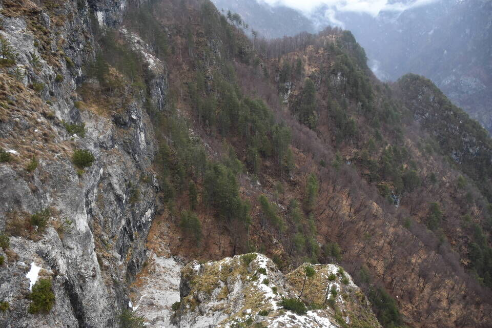Una bella cengia esposta con sentiero di camosci porta in alto permettendo di salire il Cuel da la Ruvîs per cresta nord.

Tratto di discesa, da notare il bel sentierino presente.
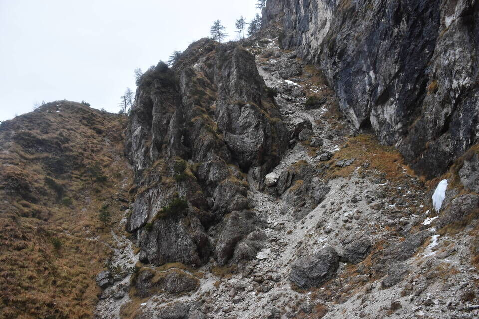Visuale da est, scattata dal Monticello, che mostra il suddetto passaggio dalla spalla sud-est (sx) al costone nord-est (dx).
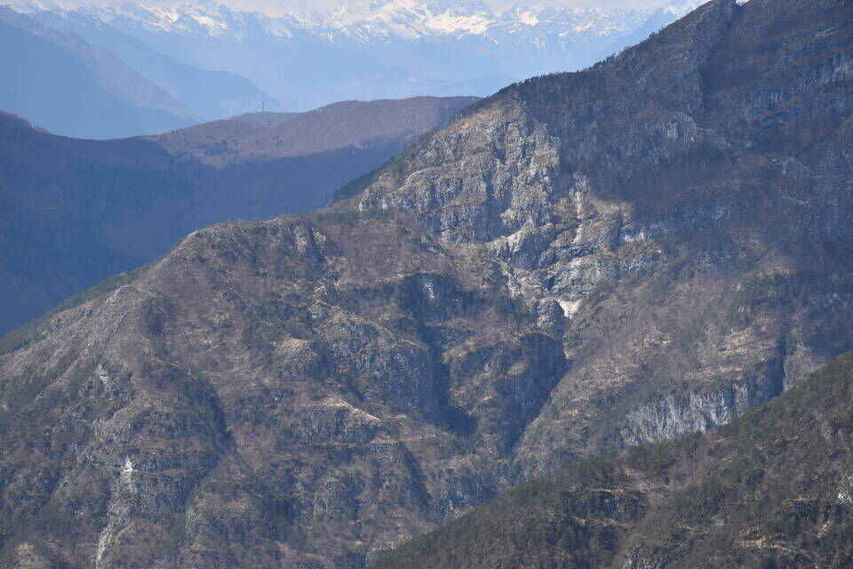Dalla forcelletta sul costone nord-est del monte ci caliamo per bosco di faggi, senza alcuna traccia, raggiungendo l'unico casolare ristrutturato degli stavoli Simon.
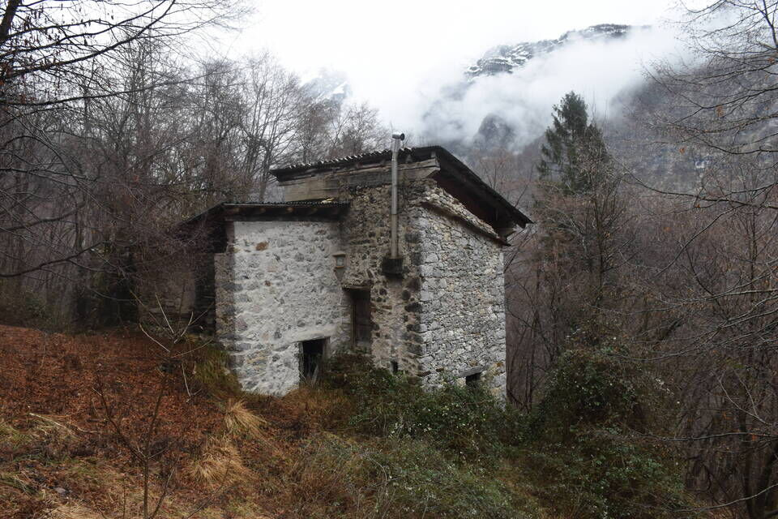Ora ci aspetta il lungo e sfiancante ritorno a Campiolo con le sue innumerevoli risalite. Complici la giornata di pioggia e l'enorme quantità d'acqua in val Nuviernulis, siamo arrivati alla macchina in uno stato pietoso: se mi fossi tuffato nel Glagnò sarei stato più asciutto.
***
Nelle ultime settimane ho dato un'occhiata più da vicino al tuo blog e sono rimasto colpito.Attraversi porte verso un passato che quasi nessuno sa esistente e preservi ricordi storicamente molto preziosi.
Penso che non ci sia più nessuno che conosca la regione così a fondo come te, e questo a 27 anni! Rispetto. Penso che questo sia prezioso per la regione del Friuli Venezia Giulia e debba essere reso noto a un pubblico più ampio interessato. Ma è solo un pensiero.